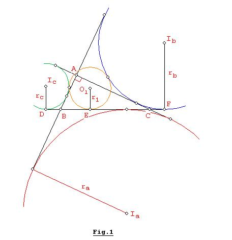
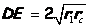
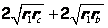
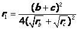
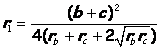

Problema 301: En el triángulo ABC (<A=90º), construir el círculo (O1, r1) tangente externamente a los excírculos (Ib) e (Ic) de tal forma que sea también tangente al lado BC, con el punto de tangencia entre B y C.
Probar que:
Donde: ra= radio del excírculo (Ia) y r = inradio de ABC.
Solución de Juan Carlos Salazar, profesor de Geometría del Equipo Olímpico de Venezuela.(Puerto Ordaz)
:

Si D, E, F son los puntos de
tangencia de los circulos (Ic,
rc), (O1, r1), (Ib, rb) con
BC respectivamente, ver Fig.1, tenemos por simple cálculo:  


Además como el triángulo ABC es recto en A, tenemos que:
b + c = a +2r… (2)
rb.rc = r.ra… (3)
a = ra - r… (4)
ra –r = rb + rc…
(5)
De (2) y (4): b + c = ra + r
Reemplazando este resultado con (3) y (5) en (1) obtenemos: